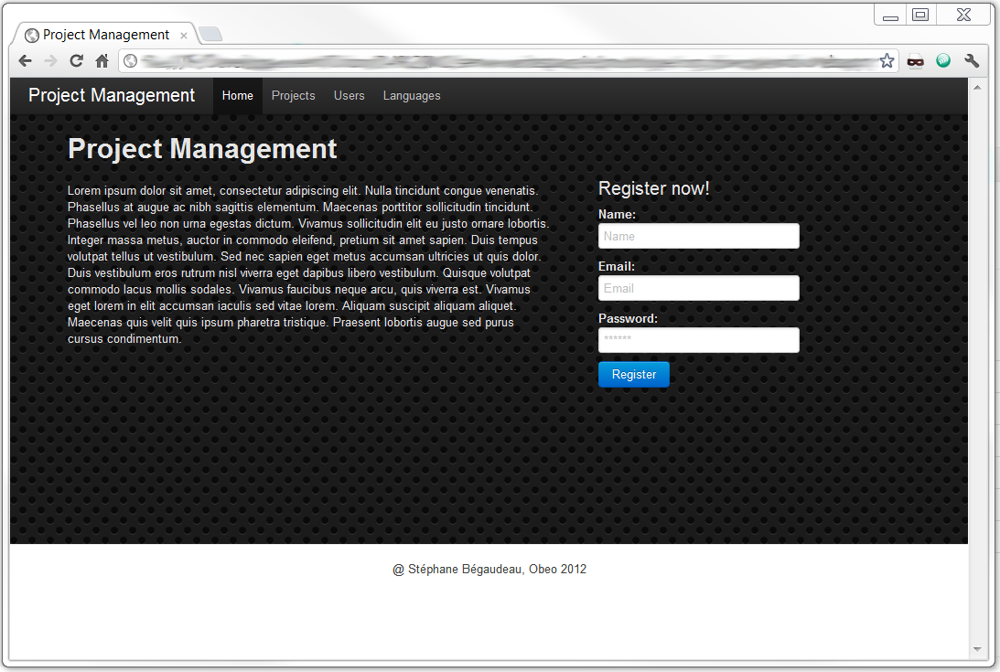

Getting Started
Where everything begins
Introduction a long time ago in a repository far, far away...
On this page, you will be able to find links to two tutorials to get you started with code generation with Acceleo. The basic tutorial is embedded within Acceleo and it will walk you trought the creation of an UML to Java code generator with Acceleo. The advanced tutorial can be downloaded from the Obeo Network. It features the creation of a domain specific meta-model to manipulate concepts dedicated to your business contrary to a generic metamodel like UML and after that build a code generator using this meta-model.
Basic Tutorial let's start slowly
From UML models to Java beans in 15min.

Build a generator to create Java beans from UML models and integrate it in a graphical modeler (Eclipse Helios and Indigo).
Advanced Tutorial in depth look at Acceleo
Build a domain specific meta-model and its code generator to generate web applications based on backbone.js
This tutorial was presented during EclipseCon 2012 in Reston, Virginia. This tutorial is not directly included in Acceleo and has to be downloaded separately since some of its content (backbone.js, underscore.js, jquery.js) could not be approved in time by the Eclipse Foundation for the Juno release.